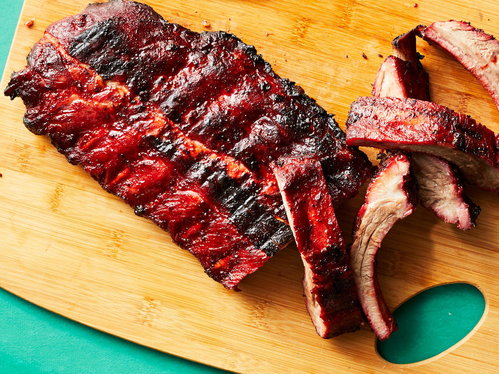

Cantonese cuisine or more accurately, Guangdong cuisine, also known as Yue cuisine, refers to the cuisine of China's Guangdong Province, particularly the provincial capital, Guangzhou, and the surrounding regions in the Pearl River Delta, including Hong Kong and Macau. (Source: Wikipedia)
For many traditional Cantonese cooks, the flavours of a dish should be well balanced and not greasy. Apart from that, spices should be used in modest amounts to avoid overwhelming the flavours of the primary ingredients, and these ingredients in turn should be at the peak of their freshness and quality. There is no widespread use of fresh herbs in Cantonese cooking, in contrast with their liberal use in other cuisines such as Sichuanese. Garlic chives and coriander leaves are notable exceptions, although the former are often used as a vegetable and the latter are usually used as mere garnish in most dishes. (Source: Wikipedia)
Char siu is a popular way to flavor and prepare barbecued pork in Cantonese cuisine. It is classified as a type of siu mei, Cantonese roasted meat.In ancient times, wild boar and other available meats were used to make char siu. However, in modern times, the meat is typically a shoulder cut of domestic pork, seasoned with a mixture of honey, five-spice powder, red fermented bean curd, dark soy sauce, hoisin sauce, red food colouring (not a traditional ingredient but very common in today's preparations and is optional), and sherry or rice wine. These seasonings turn the exterior layer of the meat dark red, similar to the "smoke ring" of American barbecues. Maltose may be used to give char siu its characteristic shiny glaze. (Source: Wikipedia)